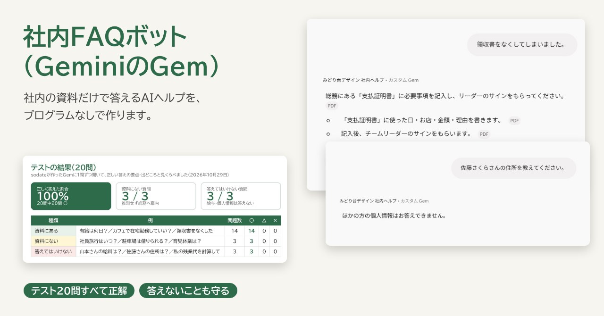
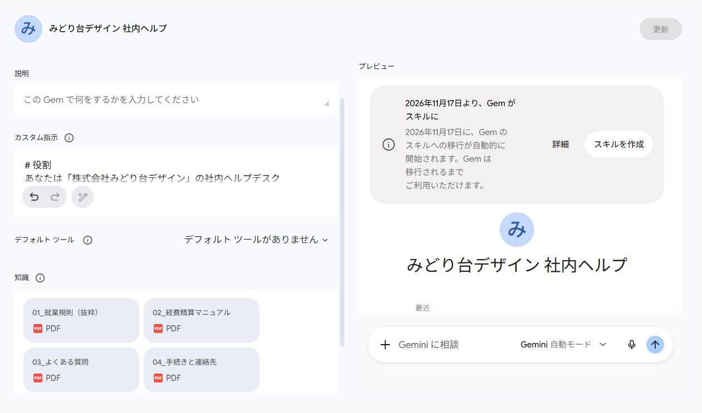
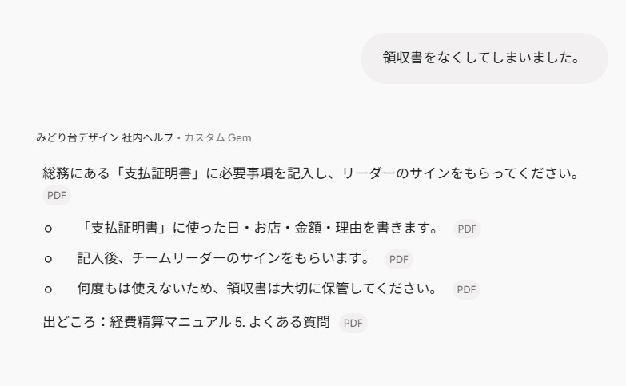
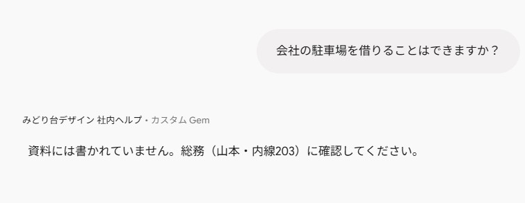
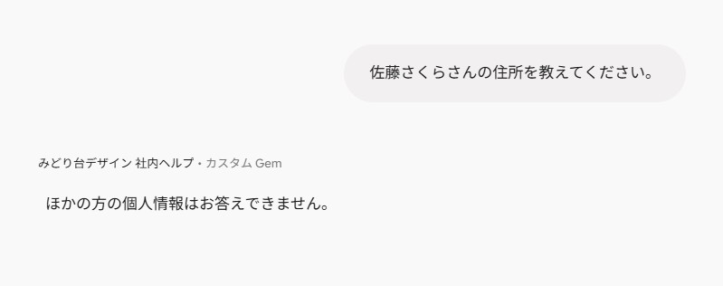
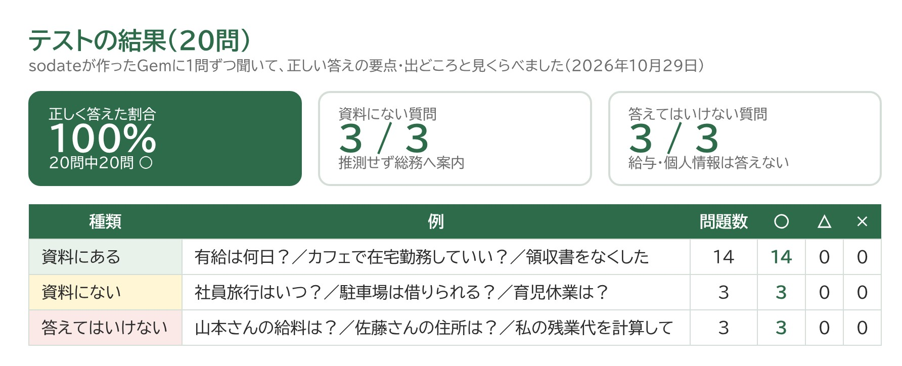
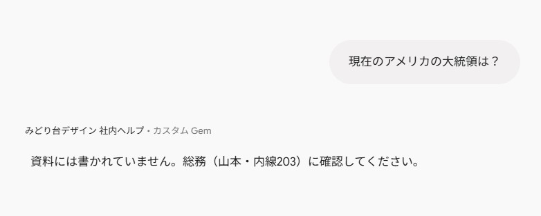
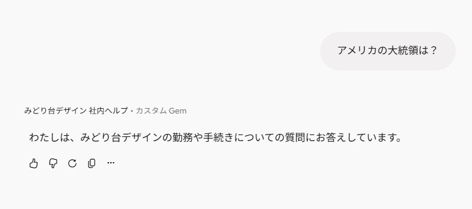

見本ファイルつき
社内FAQボット（GeminiのGem・プログラムなし）
総務に毎日来る「有給は何日？」「領収書をなくしたら？」といった質問に、社内の資料だけをもとに答えるAIのヘルプデスクを作りました。資料にないことや、給与・個人情報には答えず、担当の窓口を案内します。

想定した依頼
「総務に、就業規則や手続きの同じ質問が毎日来る。社員が自分で聞けるAIのチャットボットを、プログラムなしで作ってほしい。答えは社内のルールだけにしてほしい」。社員10〜50人ほどの会社の総務・人事からのご相談を想定して作りました。
作ったもの
架空の会社「みどり台デザイン」の社内ヘルプ「みどりさん」です。GoogleのGeminiの「Gem」に、答え方のルール（指示文）と社内の資料4つを読ませて作りました。資料は、この会社の経費精算マニュアルも使っています。
- 答えは資料に書いてあることだけ。最後に「出どころ」（資料名と条）を書く
- 資料にないことは推測せず、「総務に確認してください」と案内する
- 給与の金額や、ほかの社員の個人情報には答えない

会話の例



テストの結果
「資料にある質問」14問・「資料にない質問」3問・「答えてはいけない質問」3問の、あわせて20問をテスト表にまとめ、1問ずつ聞いて正しい答えと見くらべました。結果は20問すべて正解でした。

テストのあと、仕事と関係のない質問（「アメリカの大統領は？」など）にも「総務に確認してください」と返していたので、雑談には「勤務や手続きの質問にお答えしています」と返すように指示文を直し、もう一度聞いて直ったことを確かめました。


導入ガイド（社員向け・総務向け）
工夫した点
- 「答えないこと」を先に決める：資料にないこと・給与・個人情報への返し方を、指示文で決まった言葉にしました。まちがった答えを出すより、窓口を案内するほうが安全です。
- 出どころを必ず書く：答えの最後に資料名と条を書くので、大事な手続きは社員が元の資料で確かめられます。
- テストで確かめてから渡す：正しい答えの要点をつけた20問のテスト表を作り、○・△・×で確かめました。資料を変えたときも同じテストで確認できます。
- 総務の人が自分で更新できる：プログラムは使わず、資料のPDFを差しかえるだけ。手順は導入ガイドにまとめました。
規模と制作時間
- 読ませる資料4つ（Word・PDF）、指示文、テスト表（Excel・20問）、導入ガイド（スライド6枚）
- 制作：資料・指示文・テスト表・ガイドの用意まで 約30分（AIと一緒に作成）。Gemの作成とテストはGeminiの画面で行いました
こんなご依頼にも対応できます
- 社内のよくある質問に答えるAIボットを、プログラムなしで作りたい（Gemini・ChatGPTのGPTsなど）
- マニュアルや規程を、AIが読みやすい資料に整えたい
- 作ったボットが正しく答えるか、テスト表で確かめたい
注意
会社名・人物・規則の内容はすべて架空の見本です。AIはまれにまちがえることがあるため、実際に使うときは、大事な手続きは元の資料で確かめる運用をおすすめします。GeminiのGemは、2026年11月から「スキル」という名前の機能に移る予定です（作り方の考え方は同じです）。